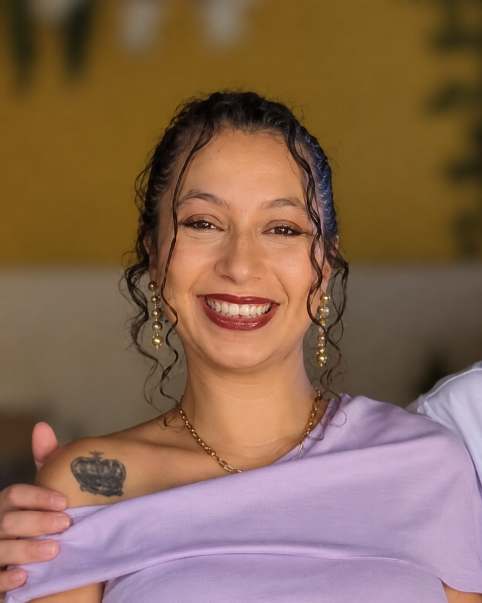

Kyan Luisa dos Santos
Da Maternidade Atípica ao Cuidado Inclusivo: A Força de Kyan no Ambiente Escolar
A jornada profissional da técnica de inclusão Kyan Luisa dos Santos é impulsionada por um amor de mãe que se transformou em missão de vida. Já formada em Pedagogia e atuando como professora, Kyan sentiu a necessidade de dar um passo além na carreira ao descobrir a maternidade atípica. A busca por compreender melhor as necessidades de seu filho foi o grande divisor de águas para a área da inclusão.
Sua história é moldada pela presença marcante de mulheres. Criada em uma família predominantemente feminina, ao lado de quatro irmãs mais velhas, Kyan encontrou dentro de casa seus primeiros exemplos de força e inspiração. Autodenominada "meio nerd", ela também busca referências em figuras diversas — desde cientistas como Marie Curie até grandes nomes da arte e da música, como Carmen Miranda e Clara Nunes.
"Ser mulher já é um desafio. Ser mãe é muito difícil, ser uma boa profissional é muito difícil, e as pessoas te darem esse crédito por ser uma boa profissional também é muito difícil. Você está sempre sendo julgada ou tendo um preconceito por ser mulher." — Kyan, sobre os múltiplos papéis e desafios das mulheres na sociedade
Apesar das batalhas diárias, Kyan não hesita ao responder qual é a maior e mais orgulhosa conquista de sua vida: a maternidade. É esse mesmo amor maternal e protetor que se reflete em sua atuação na escola, onde busca diariamente fazer a diferença na vida dos alunos.
Mais do que uma referência profissional, a técnica de inclusão deseja que sua vivência sirva de incentivo para que as pessoas busquem ser humanamente melhores no dia a dia.
Para as estudantes que acompanham seu trabalho no ambiente escolar, Kyan deixa um conselho poderoso de autoafirmação e coragem: